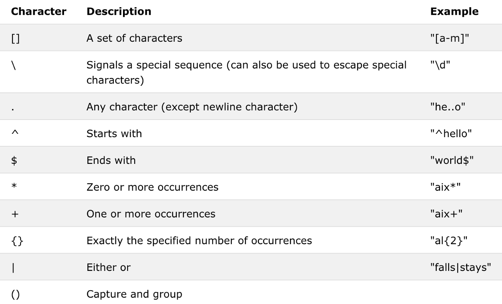

Pandas II.
Adattipus specifikus függvények
A dtypes tulajdonság megmutatja, hogy melyik oszlopban milyen adattípus található. Fontos adalék, hogy amikor beolvassuk az adatokat, akkor a Pandas az első néhány sor alapján eldönti, hogy milyen adattípus van az oszlopban (egy oszlop egy típus). Ez sokszor vezethet hibákhoz a beolvasásnál, vagy pl. előfordul, hogy számok szövegként vannak tárolva.
import pandas as pd
df = pd.read_csv('source/olimpia.csv')
display(df.head())
display(df.dtypes)
 Az általános függvény az adattípus megváltoztatására az
Az általános függvény az adattípus megváltoztatására az astype() függvény.
import pandas as pd
df = pd.read_csv('source/olimpia.csv')
df['Year'].astype('int')
0 1992
1 2012
2 1920
3 1900
4 1988
...
271111 1976
271112 2014
271113 2014
271114 1998
271115 2002
Name: Year, Length: 271116, dtype: int32
Dátum típus
A dátum adatípus speciális kezelést igényel, a lentebbi függvény akkor műdödne jól, ha ÉÉÉÉ-HH-NN ÓÓ:PP:MM formátumban lenne megadva az adat.
import pandas as pd
df = pd.read_csv('source/olimpia.csv')
df['Year'].astype('datetime64[s]')
0 1970-01-01 00:33:12
1 1970-01-01 00:33:32
2 1970-01-01 00:32:00
3 1970-01-01 00:31:40
4 1970-01-01 00:33:08
...
271111 1970-01-01 00:32:56
271112 1970-01-01 00:33:34
271113 1970-01-01 00:33:34
271114 1970-01-01 00:33:18
271115 1970-01-01 00:33:22
Name: Year, Length: 271116, dtype: datetime64[ns]
Az eredmény valóban dátum típusú, de a függvény megfelelő konverzió nélkül nem ismerte fel, hogy az adott szám az évet jelölte, ezért a legkisebb egységgel, a századmásodperccel számolt. A Pandas saját konvertálófüggvénye a to_datetime(), melyben paraméterként meg tudjuk adni a formátumot is.
A dárumformátumban megadott adatokból pedig a dt utótaggal kinyerhető külön a dátum és az idő rész is, valamint olyan adatok, mint a hét sorszáma (dt.isocalendar().week) vagy az, hogy az adott év szökőév-e (dt.is_leap_year).
import pandas as pd
df = pd.read_csv('source/olimpia.csv')
df['Year'] = pd.to_datetime(df['Year'], format='%Y')
display(df['Year'])
display(df['Year'].dt.date)
display(df['Year'].dt.time)
display(df['Year'].dt.isocalendar().week)
display(df['Year'].dt.is_leap_year)
0 1992-01-01
1 2012-01-01
2 1920-01-01
3 1900-01-01
4 1988-01-01
...
271111 1976-01-01
271112 2014-01-01
271113 2014-01-01
271114 1998-01-01
271115 2002-01-01
Name: Year, Length: 271116, dtype: datetime64[ns]
0 1992-01-01
1 2012-01-01
2 1920-01-01
3 1900-01-01
4 1988-01-01
...
271111 1976-01-01
271112 2014-01-01
271113 2014-01-01
271114 1998-01-01
271115 2002-01-01
Name: Year, Length: 271116, dtype: object
0 00:00:00
1 00:00:00
2 00:00:00
3 00:00:00
4 00:00:00
...
271111 00:00:00
271112 00:00:00
271113 00:00:00
271114 00:00:00
271115 00:00:00
Name: Year, Length: 271116, dtype: object
0 1
1 52
2 1
3 1
4 53
..
271111 1
271112 1
271113 1
271114 1
271115 1
Name: week, Length: 271116, dtype: UInt32
0 True
1 True
2 True
3 False
4 True
...
271111 True
271112 False
271113 False
271114 False
271115 False
Name: Year, Length: 271116, dtype: bool
Szöveges típus
A szöveges típus utótagja az str, amelyre meghívhatunk rengeteg további függvényt. A teljesség igénye nélkül néhány példa:
lower()/upper()- a szöveg kis és nagybetűs változataizfill()- 0-kal egészíti ki a szöveget. Ez akkor jöhet jól ha pl. unique azonosítót akarunk készítenistartswith()- segítségével rákereshetünk bizonyos kezdettel rendelkező szövegekre (az eredmény a megfelelő indexek halmaza)contains()- segítségével rákereshetünk egy szövegrészletet tartalmazó szövegekre (az eredmény a megfelelő indexek halmaza)
import pandas as pd
df = pd.read_csv('source/olimpia.csv')
print('LOWER')
display(df['Event'].str.lower())
print('ZFILL')
display(df['Event'].str.zfill(width=30))
print('STARTSWITH')
display(df.loc[df['Event'].str.startswith('Basket')])
print('CONTAINS')
print(len(df.loc[df['Event'].str.contains('Men')])) # Csak a darabszámot írjuk ki
A contains függvény képes kezelni úgynevezett reguláris kifejezéseket. A reguláris kifejezés (rövidítve: regexp vagy regex az angol regular expression után) egy olyan, bizonyos szintaktikai szabályok szerint leírt string, amivel meghatározható stringek egy halmaza.
Az ilyen kifejezés valamilyen minta szerinti szöveg keresésére, cseréjére, illetve a szöveges adatok ellenőrzésére használható.
Például egy érvényes (nem feltétlenül még élő személyt jelölő) személyi szám biztosan a következő elemekből áll:
- egy 1 és 8 közötti számjegy;
- egy szóköz;
- 19 vagy 20 vagy 21 és még két számjegy (év);
- utána
- egy 0 és egy 1-9 közötti számjegy vagy
- egy 1 és egy 0-2 közötti számjegy (hónap);
- egy 0-2 közötti számjegy és egy 0-9 közötti számjegy vagy
- egy 3, amit 0 vagy 1 követ (nap)
- egy szóköz
- és még négy számjegy.
A pythex oldalon interaktívan lehet tesztelni a regex kifejezésünk. Az alábbiakban még néhány példa található a speciális regex kifejezésekre.

A következő regex-et is tartalmazó lekérdezésben például egy regex alapján kerestünk (regex=True), figyelmen kívül hagytuk a kis és nagybetűket (case=False), és csak olyan sorokat választottunk ki, amelyben szerepel "women" és utána a "ball" kifejezés úgy, hogy a kettő között tetszőleges számú másik karakter is lehet.
import pandas as pd
df = pd.read_csv('source/olimpia.csv')
df.loc[df['Event'].str.contains('women.*ball', regex=True, case=False)]
A split() függvény a Python verziójához hasonlóan a megadott karakter alapján bontja szét a szöveget. Az expand paraméterrel egyből az elemeket tartalmazó külön oszlopokba rakja az eredményt.
import pandas as pd
df = pd.read_csv('source/olimpia.csv')
df['Games'].str.split(' ', expand=True)
Szám típus
Pandasban megtalálható a két alap szám típus (int, float), de ezen túl szofisztikáltabb numpy számformátumokat is tud kezelni. Az alap astype() funkcióval az a probléma, hogy int konvertálás esetén nem tudja kezelni a hiányzó elemeket. Az ilyen értékeket alapesetben a Pandas nan értékkel helyettesíti amely valójában egy numpy alapú np.nan érték. Amikor kiíratjuk a tálcára, akkor NaN-ként jelenik meg egységesen.
import pandas as pd
df = pd.read_csv('source/olimpia.csv')
df['Age'].astype('int')
---------------------------------------------------------------------------
IntCastingNaNError Traceback (most recent call last)
~\AppData\Local\Temp/ipykernel_13808/3409152218.py in <module>
2 df = pd.read_csv('source/olimpia.csv')
3
----> 4 df['Age'].astype('int')
c:\users\dburk\appdata\local\programs\python\python39\lib\site-packages\pandas\core\generic.py in astype(self, dtype, copy, errors)
5813 else:
5814 # else, only a single dtype is given
-> 5815 new_data = self._mgr.astype(dtype=dtype, copy=copy, errors=errors)
5816 return self._constructor(new_data).__finalize__(self, method="astype")
5817
c:\users\dburk\appdata\local\programs\python\python39\lib\site-packages\pandas\core\internals\managers.py in astype(self, dtype, copy, errors)
416
417 def astype(self: T, dtype, copy: bool = False, errors: str = "raise") -> T:
--> 418 return self.apply("astype", dtype=dtype, copy=copy, errors=errors)
419
420 def convert(
c:\users\dburk\appdata\local\programs\python\python39\lib\site-packages\pandas\core\internals\managers.py in apply(self, f, align_keys, ignore_failures, **kwargs)
325 applied = b.apply(f, **kwargs)
326 else:
--> 327 applied = getattr(b, f)(**kwargs)
328 except (TypeError, NotImplementedError):
329 if not ignore_failures:
c:\users\dburk\appdata\local\programs\python\python39\lib\site-packages\pandas\core\internals\blocks.py in astype(self, dtype, copy, errors)
590 values = self.values
591
--> 592 new_values = astype_array_safe(values, dtype, copy=copy, errors=errors)
593
594 new_values = maybe_coerce_values(new_values)
c:\users\dburk\appdata\local\programs\python\python39\lib\site-packages\pandas\core\dtypes\cast.py in astype_array_safe(values, dtype, copy, errors)
1307
1308 try:
-> 1309 new_values = astype_array(values, dtype, copy=copy)
1310 except (ValueError, TypeError):
1311 # e.g. astype_nansafe can fail on object-dtype of strings
c:\users\dburk\appdata\local\programs\python\python39\lib\site-packages\pandas\core\dtypes\cast.py in astype_array(values, dtype, copy)
1255
1256 else:
-> 1257 values = astype_nansafe(values, dtype, copy=copy)
1258
1259 # in pandas we don't store numpy str dtypes, so convert to object
c:\users\dburk\appdata\local\programs\python\python39\lib\site-packages\pandas\core\dtypes\cast.py in astype_nansafe(arr, dtype, copy, skipna)
1166
1167 elif np.issubdtype(arr.dtype, np.floating) and np.issubdtype(dtype, np.integer):
-> 1168 return astype_float_to_int_nansafe(arr, dtype, copy)
1169
1170 elif is_object_dtype(arr):
c:\users\dburk\appdata\local\programs\python\python39\lib\site-packages\pandas\core\dtypes\cast.py in astype_float_to_int_nansafe(values, dtype, copy)
1211 """
1212 if not np.isfinite(values).all():
-> 1213 raise IntCastingNaNError( 1214 "Cannot convert non-finite values (NA or inf) to integer"
1215 )
IntCastingNaNError: Cannot convert non-finite values (NA or inf) to integer
A korábbról már ismert isnull(), vagy isna() függvényekkel lehet rákeresni a hiányzó értékekre. Fontos, hogy az nan értékek nem fognak megegyezni összehasonlítás esetén.
import pandas as pd
import numpy as np
df = pd.read_csv('source/olimpia.csv')
print(np.nan == np.nan)
df.loc[df['Age'].isna()]
A helyes konvertálási mód a to_numeric() függvény, amellyel kezelni lehet a hibás értékeket is, egyéb funkciók mellett.
import pandas as pd
df = pd.read_csv('source/olimpia.csv')
pd.to_numeric(df['Age'])
0 24.0
1 23.0
2 24.0
3 34.0
4 21.0
...
271111 29.0
271112 27.0
271113 27.0
271114 30.0
271115 34.0
Name: Age, Length: 271116, dtype: float64
Kategórikus típus
A kategórikus tipus statisztikai elemzéseknél jön jól illetve memóriát lehet megtakarítani vele. Pl. ilyen formátumban érdemes tárolni a nemet.
import pandas as pd
df = pd.read_csv('source/olimpia.csv')
df['Medal'] = df['Medal'].fillna('Participation').astype('category')
display(df['Medal'])
0 Participation
1 Participation
2 Participation
3 Gold
4 Participation
...
271111 Participation
271112 Participation
271113 Participation
271114 Participation
271115 Participation
Name: Medal, Length: 271116, dtype: category
Categories (4, object): ['Bronze', 'Gold', 'Participation', 'Silver']
A cat utótaggal érhetőek el a speciális kategórikus függvények. A categories tulajdonság például megmutatja a létező kategóriákat. Egy kategórikus típus lehet sorba rendezett. Ez alkalmas pl. a nem, kicsit nem, kicsit igen, igen válaszok tárolására.
Adattáblák átformálása
Grouping
A groupby(['csoportosító_oszlopnév')['oszlopnév'].függvény() szintaktikával lehet egyik oszlop értékei alapján csoportosítani. Jelen esetben az országrövidítések alapján megszámoljuk, hogy hány érték van a name oszlopban.
import pandas as pd
df = pd.read_csv('source/olimpia.csv')
df.groupby(['NOC'])['Name'].count()
NOC
AFG 126
AHO 79
ALB 70
ALG 551
AND 169
...
YEM 32
YMD 5
YUG 2583
ZAM 183
ZIM 311
Name: Name, Length: 230, dtype: int64
A kapott eredményre további függvényeket lehet fűzni. Jelen esetben az olimpikonok átlagéletkorát néztük meg majd rendeztük sorba országrövidítésenként.
import pandas as pd
df = pd.read_csv('source/olimpia.csv')
df.groupby(['NOC'])['Age'].mean().sort_values()
NOC
TUV 20.142857
MHL 20.285714
MDV 20.918367
NFL 21.000000
YEM 21.093750
...
IRL 27.473727
NAM 27.857143
MON 30.047120
CRT NaN
UNK NaN
Name: Age, Length: 230, dtype: float64
A csoportosítás lehet több oszlop alapján is (egy listaként átadva). A nunique() függvény az különböző értékek számát mutatja.
import pandas as pd
df = pd.read_csv('source/olimpia.csv')
df.groupby(['NOC', 'Sex'])['Name'].nunique()
NOC Sex
AFG F 4
M 99
AHO F 10
M 45
ALB F 16
...
YUG M 1100
ZAM F 13
M 132
ZIM F 72
M 124
Name: Name, Length: 452, dtype: int64
A groupby függvénnyel kombinálható transform() függvény nem csak hogy csoportosítja B oszlop értékeit az A oszlop alapján hanem vissza is helyettesíti a kapott értékeket a B oszlopba. Az alábbi példában a sima mean() függvény eredménye annyi elemű, ahány ország van. A transform(mean) függvény ezzel szemben annyi sort ad eredményül, ahány sor az eredeti, csoportosítás nélküli táblázatban volt, és minden sor mellé odaírja a mean által kiszámított értékek közül a megfelelőt.
import pandas as pd
df = pd.read_csv('source/olimpia.csv')
display(df.groupby(['NOC'])['Age'].mean())
display(df.groupby(['NOC'])['Age'].transform('mean'))
NOC
AFG 23.538462
AHO 26.589744
ALB 25.342857
ALG 24.370642
AND 23.065089
...
YEM 21.093750
YMD 23.600000
YUG 24.745721
ZAM 23.461039
ZIM 25.200647
Name: Age, Length: 230, dtype: float64
0 23.000977
1 23.000977
2 27.351488
3 27.351488
4 26.633870
...
271111 25.683794
271112 25.683794
271113 25.683794
271114 25.683794
271115 25.683794
Name: Age, Length: 271116, dtype: float64
A szintén groupby után használható agg() függvény egy Python szótárat kap bemenetként és segítségével egy sorra több vagy több sorra egy aggregálási módot is meg lehet adni. Az alábbi példában az országrövidítés alapján az életkor oszlopnak nézzük az átlag és medián értékét, a magasság oszlopnak a minimum és maximum értékét, és végül a játékok oszlopra lefuttattunk egy lambda függvényt (erről a függvénytípusról később még lesz szó).
import pandas as pd
df = pd.read_csv('source/olimpia.csv')
df.groupby(['NOC']).agg({
'Age': ['mean', 'median'],
'Height': ['min', 'max'],
'Games': lambda x: set(x)})
Transpose
A transpose T függvény átlósan tükrözi a táblánkat. Azaz minden sorból oszlop lesz és fordítva.
import pandas as pd
df = pd.read_csv('source/olimpia.csv')
df.T
Pivot tábla
A pivot_table() függvény az Excelben megtalálható pivot funkcióhoz hasonlóan pivotálja az adattáblát. Megadható az oszlopok, sorok, értékek és az aggregálási módszer.
import pandas as pd
df = pd.read_csv('source/olimpia.csv')
pivot = pd.pivot_table(df, index=['NOC'], values=['Age','Height', 'Weight'], columns=['Sex'], aggfunc='mean', margins=True)
display(pivot)
Melt
A melt() függvény oszlopokból csinál sorokat azáltal, hogy berakja egy oszlopba több oszlop értékét.
import pandas as pd
df = pd.read_csv('source/olimpia.csv')
pd.melt(df, id_vars=['Team'], value_vars=['Medal', 'Games'], var_name='Olmypic team', value_name='Medal Type')
Stack/unstack
Az un/stack() függvény demonstrálására létrehozunk egy összetett csoportosítást. A létrejövő tábla többszintű sorindexxel és többszintű oszlopindexxel rendelkezik. Az ilyen multindexek szintjeit csökkenti az unstack() függvény jelen esetben a nem sorindexből oszlopindexet csinálunk. A stack() ezzel ellentétesen oszlopindexből csinál sorindexet. Ha nem adunk meg neki paramétert akkor a legkülső indexet rakja át.
import pandas as pd
df = pd.read_csv('source/olimpia.csv')
stack_test = df.loc[(df['NOC'] == 'HUN') &
(df['Games'].str.contains('Summer'))] \
.groupby(['NOC', 'Games', 'Sex']) \
.agg({'Age':['min','max','mean'],
'Height':['min','max','mean'],
'Weight':['min','max','mean']})
display(stack_test)
display(stack_test.unstack(level='Sex'))
display(stack_test.stack())
Adattáblák összekapcsolása
Append
Az append() függvény egyszerűen az egyik adattábla végéhez hozzáfűzi a megadott adattábla sorait.
import pandas as pd
df = pd.read_csv('source/olimpia.csv')
print(df.shape)
teszt_df = df.append(df)
print(teszt_df.shape)
(271116, 15)
(542232, 15)
Természetesen csak akkor működik, ha mindkét adattáblának ugyanazok az oszlopai. Különböző adattáblák esetén ezért az összefűzés előtt szükség lehet a korábbi transzformációk alkalmazására.
Concatenate
A concat() függvény egy listában található adattáblákat fűz össze vertikálisan (axis=0), vagy horizontálisan (axis=1). Például, ha először téli/nyári félre osztjuk az olimpiai táblát, akkor utána újra egyesíthetjük.
import pandas as pd
df = pd.read_csv('source/olimpia.csv')
summer = df.loc[df['Games'].str.contains('Summer')]
winter = df.loc[df['Games'].str.contains('Winter')]
pd.concat([summer, winter], axis=0)
A példából kiderül, hogy a vertikális összefűzés lényegében az append funkció működését reprodukálja. A horizontális opcióval azonban új oszlopokat fűzhetünk a táblánkhoz (de ilyenkor is fontos az illeszkedés, azaz mindkét táblának ugyanannyi sora kell, hogy legyen).
Merge
A merge() függvény két vagy több adattáblát kapcsol össze egy közös érték alapján. A példához készítünk két átmeneti táblát. A merge egyrészt a df1.merge(df2), vagy a pd.merge(df1, df2) szintaktikával hajtható végre. A jelen esetben a "Games" oszlopon végezzük el az összekapcsolást.
import pandas as pd
df = pd.read_csv('source/olimpia.csv')
summer_1 = summer.groupby(['Games']) \
.agg({'NOC': 'nunique',
'Name': 'nunique',
'Age': 'mean',
'Height': 'mean',
'Weight': 'mean'}) \
.reset_index() \
.sample(15)
summer_2 = summer.groupby(['Games']) \
.agg({'Sport': 'nunique',
'City': 'first'}) \
.reset_index() \
.sample(15)
merged = pd.merge(summer_1, summer_2, on='Games', how='left')
display(summer_1)
display(summer_2)
display(merged)
A how paraméter segítségével tudjuk eldönteni, hogy mi legyen az egyik másik vagy mindkét adattáblában megtalálható adatokkal.
A kifejezések ismerősek lehetnek azok számára, akik használtak már lekérdező nyelveket (SQL).
Hasznos funkció még a különböző oszlopok specifikálára használt left_on és right_on paraméter illetve a suffixes paraméter, amely az olyan oszlopok megkülönböztetésére való, amelyek mindkét táblában szerepelnek.
Speciális technikák
List comprehension
A list comprehension egy olyan hasznos Python technika, amely során egy lista elemeit módosítjuk egy soron belül. Lentebb például az adattáblánk oszlopait kisbetűsítjük.
import pandas as pd
df = pd.read_csv('source/olimpia.csv')
[col.lower() for col in df.columns]
['id',
'name',
'sex',
'age',
'height',
'weight',
'team',
'noc',
'games',
'year',
'season',
'city',
'sport',
'event',
'medal']
Ez egy hasznos technika ha egy oszlop több elemét egyszerre szeretnénk módosítani egy logika alapján. Az első példában minden értéket megdupláztunk a magasság oszlopban, míg a második esetben már egy komplexebb feltételrendszer alapján jártunk el.
import pandas as pd
df = pd.read_csv('source/olimpia.csv')
df['Height2'] = [x*2 for x in df['Height']]
df['Height3'] = [x*2 if x > 175 else x/2 for x in df['Height']]
df[['Height', 'Height2', 'Height3']].dropna().head(5)
A list comprehension segíthet abban, hogy egy többszintű oszlopindex szintjeit egybefűzzük. A lenti kódrészlet a többszintű oszlop elemeit fűzi egybe '_' kifejezéssel. (A korábbi pivot táblából indulunk ki.)
import pandas as pd
df = pd.read_csv('source/olimpia.csv')
pivot = pd.pivot_table(
df,
index=['NOC'],
values=['Age','Height', 'Weight'],
columns=['Sex'],
aggfunc='mean',
margins=True)
display(pivot.head()) # Eredeti pivot
pivot.columns = ['_'.join(col).strip() for col in pivot.columns.values]
display(pivot.head()) # Összefűzött pivot
Apply és lambda függvények
Az apply() függvény használatával végre tudunk hajtani egy soron vagy az egész táblán egy megfelelő visszatérési értékkel rendelkező függvényt.
import pandas as pd
def osztalyozo(x):
if x >= 175:
return 'magas'
else:
return 'alacsony'
df = pd.read_csv('source/olimpia.csv')
df['Height_cat'] = df['Height'].apply(osztalyozo)
df.head()
Ez a kód egy új oszlopot fűz a táblához.
Az apply képes kezelni az úgynevezett lambda függvényeket is. Azokat a függvényeket hívják lambda függvénynek, ahol egyszeri használatra, soron belül definiáljuk a függvényt. Név hiányában később nem lehet rá hivatkozni. Egy lambda függvény szintaktikája a következő: lambda x: x*2 , ahol x az aktuális sort jelölő változó. Úgy működik, mintha a tábla elemein haladó for ciklusváltozója lenne.
import pandas as pd
df = pd.read_csv('source/olimpia.csv')
df['Sex_category'] = df['Sex'].apply(lambda x: 'férfi' if x == 'M' else 'nő')
df.sample(5)
A példában egy olyan lambda függvényt használunk az apply-al, amelyben egy logikai elágazás is van.
np.where és feltételes adatmódosítás
Ha szeretnénk egy új oszlopot egy meglévő oszlop bizonyos értékei szerint, akkor az egyik módszer, hogy létrehozunk egy új oszlopot egy alapértékkel, és a loc tulajdonsággal kijelöljük egy részét az eredeti oszlopnak. Ha a kijelölés feltétele után vesszővel berakunk egy oszlopnevet akkor csak a kijelölt oszlop leszűrt részénél módosítjuk az adatot.
import pandas as pd
df = pd.read_csv('source/olimpia.csv')
df['teniszező?'] = 'nem'
df.loc[df['Sport'].str.contains('Tennis'), 'teniszező?'] = 'igen'
df.groupby(['teniszező?'])['ID'].count()
teniszező?
igen 4817
nem 266299
Name: ID, dtype: int64
Az np.where hasonlóan működik, de itt egy sorban letudjuk az egész módosítást. A szintaktika az np.where(feltétel, ha True, ha False).
import pandas as pd
import numpy as np
df = pd.read_csv('source/olimpia.csv')
df['magyar?'] = np.where(df['NOC'] == 'HUN', 'igen', 'nem')
df.groupby(['magyar?', 'Sex', 'Medal'])['ID'].count()
magyar? Sex Medal
igen F Bronze 103
Gold 69
Silver 95
M Bronze 268
Gold 363
Silver 237
nem F Bronze 3668
Gold 3678
Silver 3640
M Bronze 9256
Gold 9262
Silver 9144
Name: ID, dtype: int64
Feladatok
- Olvasd be a covid.csv fájlt. Nézd meg az első pár sorát és, hogy melyik oszlopnak mi a típusa.
- Konvertáld át a date oszlopot date típusra. Alakítsd át az iso_code oszlopot kategórikus típusra.
- Szűrd le az A-val kezdődő országokat. Csoportosítsd ezen országokat népesség alapján. Ellenőrizd, hogy jó népesség számok jöttek-e, ki. Ha nem akkor a csoportosítást után másik aggregálási módot válassz.
- Hozz létre egy új oszlopot, amely a szöveggé alakított év és hónap értékekből jön létre (pl.: 2021-05). Csoportosítsd az adatokat az újonnan létrejött oszlop és az ország oszlop alapján. Vedd a New_deaths értékek összegét.
- Készíts egy pivot táblát az így létrejött csoportosításból. A sorok az egyes országok legyen az oszlopok pedig az év_hónap oszlop. A pivot tábla többszintű oszlopindexét lapítsd ki a list comprehension módszer segítségével.
- Az így létrejött táblához mergeld hozzá az eredeti tábla iso_code értékeit. Figyelj arra, hogy az eredeti tábla minden országból csak egyet tartalmazzon.